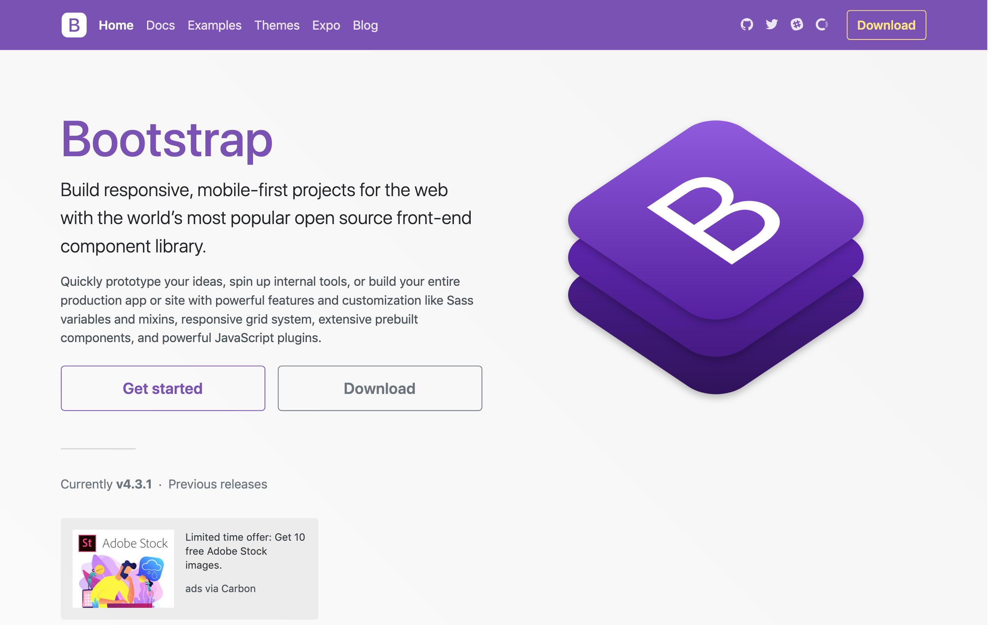

DEMO Layout:
Bootstrap is one of the open source that many developers love, including me. So what do we expect of the new changes when Bootstrap 5 is released?
Bootstrap 5: jQuery will be removed.
jQuery is a fast, small, and feature-rich JavaScript library. It makes things like HTML document traversal and manipulation, event handling, animation, and Ajax much simpler with an easy-to-use API that works across a multitude of browsers. With a combination of versatility and extensibility, jQuery has changed the way that millions of people write JavaScript.
However, with the trend of writing Single Page App with React, Angular, Vue..., jQuery has not been popular anymore. So Bootstrap 5 will completely remove jQuery.
Bootstrap 5 remaining to do after the jQuery removal #28342
Responsive font sizes with RFS v9 implementation
In Bootstrap 5, we’ve enabled responsive font sizes by default, allowing text to scale more naturally across device and viewport sizes.
Features:
- Responsive font sizes are now enabled by default
- Utility API integration
- Fluid rescaling is also applied to the spacing utilities (option can be disabled)
- Drop .font-size-sm, .font-size-base, .font-size-lg and .font-size-xl utilities
- New .text-sm, .text-base, .text-lg and .text-xl utilities
Bootstrap’s side project RFS is a unit resizing engine which was initially developed to resize font sizes (hence its abbreviation for Responsive Font Sizes). Nowadays RFS is capable of rescaling most CSS properties with unit values like margin, padding, border-radius, or even box-shadow.
The mechanism automatically calculates the appropriate values based on the dimensions of the browser viewport. It will be compiled into calc() functions with a mix of rem and viewport units to enable the responsive scaling behavior.
Using the mixins
The rfs() mixin has shorthands for font-size, margin, margin-top, margin-right, margin-bottom, margin-left, padding, padding-top, padding-right, padding-bottom, and padding-left. See the example below for source Sass and compiled CSS.
.title {
@include font-size(4rem);
}
.title {
font-size: calc(1.525rem + 3.3vw);
}
@media (max-width: 1200px) {
.title {
font-size: 4rem;
}
}
Any other property can be passed to the rfs() mixin like this:
.selector {
@include rfs(4rem, border-radius);
}
!important can also just be added to whatever value you want:
.selector {
@include padding(2.5rem !important);
}
When you don’t want to use the includes, there are also two functions:
- rfs-value() converts a value into a rem value if a px value is passed, in other cases it returns the same result.
- rfs-fluid-value() returns the fluid version of a value if the property needs rescaling.
.selector {
@include media-breakpoint-down(lg) {
padding: rfs-fluid-value(2rem);
font-size: rfs-fluid-value(1.125rem);
}
}
@media (max-width: 991.98px) {
.selector {
padding: calc(1.325rem + 0.9vw);
font-size: 1.125rem; /* 1.125rem is small enough, so RFS won't
rescale this */
}
}
<!-- Full screen modal -->
<button type="button" class="btn btn-primary"
data-toggle="modal" data-target=".bd-example-modal-fullscreen"
>Full screen modal</button>
<div class="modal fade bd-example-modal-fullscreen" tabindex="-1"
role="dialog"
aria-labelledby="myFullModalLabel" aria-hidden="true">
<div class="modal-dialog modal-xl-fullscreen">
<div class="modal-content">
...
</div>
</div>
</div>
Bootstrap 5 grid
Set gutter width in rem instead of px
The gutter width is now 2rem instead of 30px. This way we 'll be able to use the spacing utilities to align things with the grid.
Fixes #27072
Change approach on how column paddings are set
The col classes were extended lead to this list of 60 selectors in v4. By using .row > *, we can simplify this a lot. This change will apply paddings to all children of .row. Specificity won't be influenced by this change.
Columns: switch to width instead of flex-basis and max-width
Just using width has the benefit the .col-* classes can be used without the need of a .row class. This is also how the primer works.
This also provides a solution for sizing utilities #21943. Because we only set paddings to direct children of .rows, the cols won't have any padding whenever they're not in a .row.
Closes #28312
Closes #29505
More control over gutter widths & vertical gutters
This PR introduces new responsive gutter classes. There are 3 types of gutter classes available:
- gx-* classes control the horizontal/column gutter width
- gy-* classes control the vertical/row gutter width
- g-* classes control the horizontal & vertical gutter width
These gutter classes can be added to the .row and influence the negative margins on the row and the padding on the columns.
Responsive variants are also available to get control per breakpoint. With this change we might consider ditching (or disable by default) the negative margins which increase our filesize quite a lot.
How do the gutters work?
The way the gutters are set in horizontal direction is kept the same as in v4 (negative margins on the row and paddings on the columns). The vertical gutters work a little different. Margin is added to the top of each column and to counteract the top margin, a negative margin is added to the row. We use margins instead of paddings to prevent overlapping issues (like we have with the horizontal paddings).
Better nesting support
In v4, .rows couldn't be nested, once you tried to add a .row to a .col-*, the margins and paddings caused some conflicts. By removing the paddings & margins form nested rows (.row > .row), we can nest rows in a more flexible way.
List styles removed by default @include list-unstyled() is added to the .rows by default. This way, you won't need to add .list-unstyled to s.
Removal of .form-row
.form-rows had a smaller gutter width, but since we now have the gutter classes, we can use them for even more control over the gutter widths. Removal of> .form-inline
.form-inline is removed in favor of the more flexible grid. The children can now be wrapped in .col-md-auto divs when needed. With the gutter classes, we can have easier control over the vertical spacing instead of using the responsive margin utilities.
Remove position: relative from cols
Closes #25254
Closes #26512
Removal of card decks We currently have as well card decks as the grid system, but our grid offers more responsive control, so there's not really a reason to keep the decks.
Removal of .list-inline The grid also covers this case.
Remove global box-sizing reset from bootstrap-grid.css
In bootstrap-grid.css, box-sizing was inherited which introduces this issue: #22872. On the other hand, setting the global box-sizing behaviour can introduce unexpected behaviour for custom CSS. By only adding box-sizing to the columns, we only apply the box-sizing to the elements where it's needed.
Navbar optimizations
- Remove redundant display: inline-block from flex children
- Remove line-height: inherit; which is the default value of line-height
- Use flex shorthand
- Improve background shorthand
- Fix removed brand margin caused by requiring containers in navbars
When Bootstrap 5 release date?
Not sure which day is certain, but with the workload completed, Bootstrap 5 is likely to be released sometime in Q4 2020. Let's wait. 